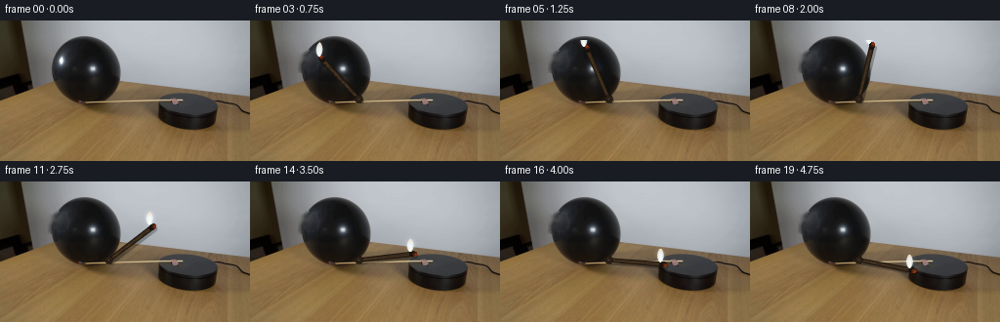
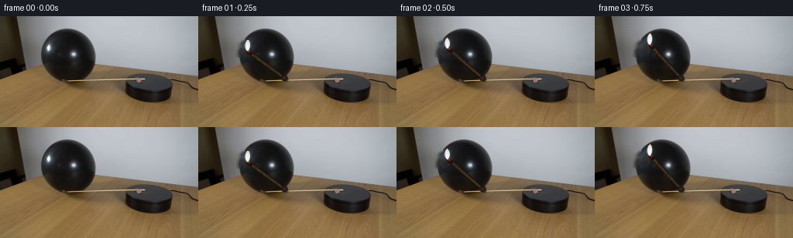

CODING AGENTS AS PIXEL WORLD MODELS
traex/DeepSeek-V4.1-Flash · 0114
点击播放 · 原生 RGB 像素
此结果可播放，但该运行尚未通过最终提交审核。页面展示不代表评测通过。
逐轮保存的候选
回放视频、检查图与代码变化。
每份候选均可单独播放。实际图片检查记录在下方工具轨迹中。
候选 01播放与检查图
点击播放 · 原生 RGB 像素


展开代码变化
--- 上一保存版本
+++ 本次保存版本
@@ -0,0 +1,229 @@
+from pathlib import Path
+import math
+
+import cv2
+import numpy as np
+from PIL import Image
+
+import artifact_io
+
+
+CASE_DIR = Path(__file__).resolve().parent
+WIDTH, HEIGHT = 256, 144
+FRAME_COUNT = 20
+FPS = 4
+
+PIVOT = np.array([111.0, 80.0], dtype=np.float32)
+MATCH_LENGTH = 56.0
+ANGLE_START = math.atan2(48.0 - PIVOT[1], 65.0 - PIVOT[0])
+ANGLE_CONTACT = math.radians(6.2)
+CONTACT_FRAME = 17
+
+ROI = (40, 20, 232, 120)
+
+
+def smoothstep(value):
+ value = float(np.clip(value, 0.0, 1.0))
+ return value * value * (3.0 - 2.0 * value)
+
+
+def blend(canvas, color, alpha):
+ alpha = np.clip(alpha, 0.0, 1.0)[..., None]
+ canvas[:] = canvas * (1.0 - alpha) + np.asarray(color, dtype=np.float32) * alpha
+
+
+def segment_distance(xx, yy, start, end):
+ vx, vy = end[0] - start[0], end[1] - start[1]
+ wx, wy = xx - start[0], yy - start[1]
+ length2 = vx * vx + vy * vy
+ t = np.clip((wx * vx + wy * vy) / max(length2, 1e-6), 0.0, 1.0)
+ dx = wx - t * vx
+ dy = wy - t * vy
+ return np.sqrt(dx * dx + dy * dy), t, np.abs(dx * (-vy) + dy * vx) / math.sqrt(length2)
+
+
+def clean_plate(image):
+ """Remove the supplied flame so it can be redrawn at every match angle."""
+ mask = np.zeros((HEIGHT, WIDTH), dtype=np.uint8)
+ local = image[30:54, 48:76].astype(np.float32)
+ bright = local.mean(axis=2) > 72
+ bright = cv2.dilate(bright.astype(np.uint8), np.ones((3, 3), np.uint8), iterations=1)
+ mask[30:54, 48:76] = bright * 255
+ cv2.ellipse(mask, (62, 42), (7, 8), 0, 0, 360, 255, -1)
+ return cv2.inpaint(image, mask, 5, cv2.INPAINT_TELEA)
+
+
+def balloon_contact_warp(image, amount):
+ if amount <= 0.0:
+ return image
+ yy, xx = np.mgrid[0:HEIGHT, 0:WIDTH].astype(np.float32)
+ ellipse = ((xx - 193.0) / 31.0) ** 2 + ((yy - 96.0) / 16.5) ** 2
+ local = np.exp(-(((xx - 165.0) / 10.0) ** 2 + ((yy - 87.0) / 8.0) ** 2))
+ dx = 2.2 * amount * local * (ellipse < 1.08)
+ map_x = xx - dx
+ map_y = yy.copy()
+ warped = cv2.remap(
+ image,
+ map_x,
+ map_y,
+ interpolation=cv2.INTER_CUBIC,
+ borderMode=cv2.BORDER_REFLECT_101,
+ )
+ return warped
+
+
+def draw_match(base, head, flicker, contact_amount):
+ x0, y0, x1, y1 = ROI
+ canvas = base[y0:y1, x0:x1].astype(np.float32)
+ yy, xx = np.mgrid[y0:y1, x0:x1].astype(np.float32)
+
+ unit = head - PIVOT
+ unit /= max(np.linalg.norm(unit), 1e-6)
+ normal = np.array([-unit[1], unit[0]], dtype=np.float32)
+
+ # Soft contact shadow across the platform and tabletop.
+ shadow_shift = np.array([2.4, 2.0], dtype=np.float32)
+ distance, along, _ = segment_distance(
+ xx,
+ yy,
+ PIVOT + shadow_shift,
+ head + shadow_shift,
+ )
+ shadow = np.clip(3.3 - distance, 0.0, 1.0)
+ shadow *= 0.38 * np.clip(1.0 - 0.35 * along, 0.45, 1.0)
+ blend(canvas, (8, 6, 4), shadow)
+
+ # Tapered wooden match shaft with a dark edge and a narrow lit edge.
+ distance, along, side = segment_distance(xx, yy, PIVOT, head)
+ half_width = 2.15 + 0.55 * along
+ shaft = np.clip(half_width - distance + 0.55, 0.0, 1.0)
+ shaft *= np.clip((along - 0.01) / 0.05, 0.0, 1.0)
+ blend(canvas, (27, 20, 14), shaft)
+
+ inner = np.clip(half_width - 0.85 - distance + 0.5, 0.0, 1.0)
+ wood = np.empty((*inner.shape, 3), dtype=np.float32)
+ grain = 0.5 + 0.5 * np.sin(along * 43.0 + side * 9.0)
+ lit_edge = np.clip(1.0 - side / 1.55, 0.0, 1.0)
+ wood[..., 0] = 42.0 + 18.0 * grain + 17.0 * lit_edge
+ wood[..., 1] = 32.0 + 13.0 * grain + 11.0 * lit_edge
+ wood[..., 2] = 22.0 + 8.0 * grain + 4.0 * lit_edge
+ a = inner[..., None]
+ canvas[:] = canvas * (1.0 - a) + wood * a
+
+ # Attachment boss at the pivot makes the rotation legible.
+ boss_dist = np.sqrt((xx - PIVOT[0]) ** 2 + (yy - PIVOT[1]) ** 2)
+ boss = np.clip(4.2 - boss_dist + 0.45, 0.0, 1.0)
+ blend(canvas, (18, 14, 11), boss)
+ boss_ring = np.clip(0.9 - np.abs(boss_dist - 2.7), 0.0, 1.0)
+ blend(canvas, (83, 63, 42), boss_ring * 0.8)
+ pin = np.clip(1.8 - boss_dist, 0.0, 1.0)
+ blend(canvas, (107, 84, 56), pin * 0.55)
+
+ # Charred match head, with a small ember on the flame-facing side.
+ head_long = (xx - head[0]) * unit[0] + (yy - head[1]) * unit[1]
+ head_cross = (xx - head[0]) * normal[0] + (yy - head[1]) * normal[1]
+ head_shape = (head_long / 4.4) ** 2 + (head_cross / 3.1) ** 2
+ head_mask = np.clip((1.03 - head_shape) * 5.0, 0.0, 1.0)
+ blend(canvas, (23, 18, 15), head_mask)
+ ember = head_mask * np.clip((head_long + 1.2) / 3.2, 0.0, 1.0)
+ ember *= np.clip((head_cross + 2.0) / 2.0, 0.0, 1.0)
+ blend(canvas, (172, 56, 18), ember * 0.72)
+
+ # A vertical flame stays upright while the match rotates.
+ base_y = head[1] - 2.2
+ flame_height = 14.2 + 0.8 * flicker
+ flame_center = head[0] - 3.0 + 0.35 * math.sin(flicker * 2.2)
+ u = np.clip((base_y - yy) / flame_height, 0.0, 1.0)
+ cx = flame_center + 0.55 * math.sin(flicker * 3.0) * u * u
+ half = 3.35 * np.power(np.sin(np.pi * u) + 1e-6, 0.58) * (1.0 - 0.12 * u)
+ dx = np.abs(xx - cx)
+ vertical = ((yy <= base_y) & (yy >= base_y - flame_height)).astype(np.float32)
+ flame = np.clip(half - dx + 0.65, 0.0, 1.0) * vertical
+
+ # The flame may brighten the balloon, but cannot pass through its surface.
+ balloon = ((xx - 193.0) / 31.0) ** 2 + ((yy - 96.0) / 16.5) ** 2
+ balloon_mask = np.clip((1.0 - balloon) * 8.0, 0.0, 1.0)
+ flame *= 1.0 - 0.92 * balloon_mask
+
+ glow = np.exp(-((xx - cx) ** 2 / 12.0 + (yy - (base_y - 7.0)) ** 2 / 24.0))
+ glow *= (1.0 - 0.65 * balloon_mask)
+ canvas += glow[..., None] * np.array([58.0, 66.0, 70.0], dtype=np.float32)
+
+ outer = flame * 0.90
+ canvas[:] = canvas * (1.0 - outer[..., None]) + np.array([229, 240, 248], dtype=np.float32) * outer[..., None]
+ core = np.clip(half * 0.58 - dx + 0.6, 0.0, 1.0) * vertical
+ core *= 1.0 - 0.92 * balloon_mask
+ core *= np.clip(1.08 - u, 0.0, 1.0)
+ canvas[:] = canvas * (1.0 - core[..., None]) + np.array([255, 253, 241], dtype=np.float32) * core[..., None]
+
+ warm_base = flame * np.clip((u - 0.58) / 0.42, 0.0, 1.0)
+ canvas[:] = canvas * (1.0 - 0.24 * warm_base[..., None])
+ canvas += warm_base[..., None] * np.array([70.0, 42.0, 13.0], dtype=np.float32)
+
+ if contact_amount > 0.0:
+ contact_glow = np.exp(-(((xx - 166.0) / 7.0) ** 2 + ((yy - 87.0) / 6.0) ** 2))
+ contact_glow *= balloon_mask * contact_amount
+ canvas += contact_glow[..., None] * np.array([28.0, 18.0, 8.0], dtype=np.float32)
+ crease = np.clip(1.4 - np.abs((xx - 165.2) + 0.28 * (yy - 87.0)), 0.0, 1.0)
+ crease *= balloon_mask * contact_amount
+ blend(canvas, (15, 10, 8), crease * 0.42)
+
+ return np.clip(canvas, 0.0, 255.0)
+
+
+def make_frames():
+ original = np.asarray(Image.open(CASE_DIR / "first_frame.png").convert("RGB"), dtype=np.uint8)
+ if original.shape != (HEIGHT, WIDTH, 3):
+ raise ValueError(f"Unexpected first frame shape: {original.shape}")
+
+ plate = clean_plate(original)
+ frames = []
+ x0, y0, x1, y1 = ROI
+
+ for index in range(FRAME_COUNT):
+ if index == 0:
+ frames.append(original.copy())
+ continue
+
+ if index <= CONTACT_FRAME:
+ progress = index / CONTACT_FRAME
+ angle = ANGLE_START + (ANGLE_CONTACT - ANGLE_START) * smoothstep(progress)
+ else:
+ angle = ANGLE_CONTACT + math.radians(2.4) * (index - CONTACT_FRAME)
+
+ contact_amount = 0.0
+ if index >= CONTACT_FRAME:
+ contact_amount = min(1.0, 0.18 + 0.34 * (index - CONTACT_FRAME))
+
+ frame = plate.copy()
+ if contact_amount > 0.0:
+ frame = balloon_contact_warp(frame, contact_amount)
+
+ head = PIVOT + MATCH_LENGTH * np.array([math.cos(angle), math.sin(angle)], dtype=np.float32)
+ flicker = math.sin(index * 2.17) + 0.45 * math.sin(index * 4.31 + 0.7)
+ rendered = draw_match(frame, head, flicker, contact_amount)
+ frame[y0:y1, x0:x1] = np.rint(rendered).astype(np.uint8)
+ frames.append(frame)
+
+ return np.stack(frames).astype(np.uint8)
+
+
+def main():
+ frames = make_frames()
+ artifact_io.save(frames, CASE_DIR)
+
+ # A conventional RGB video is useful for quick review alongside the contract output.
+ writer = cv2.VideoWriter(
+ str(CASE_DIR / "video.mp4"),
+ cv2.VideoWriter_fourcc(*"mp4v"),
+ FPS,
+ (WIDTH, HEIGHT),
+ )
+ if writer.isOpened():
+ for frame in frames:
+ writer.write(cv2.cvtColor(frame, cv2.COLOR_RGB2BGR))
+ writer.release()
+
+
+if __name__ == "__main__":
+ main()
可观测工具轨迹
实际执行的命令与返回图片。
命令 1exit 0
/bin/bash -c "pwd && rg --files -g 'GENERATION_RULES.md' -g 'prompt.txt' -g 'first_frame.png' -g '"'!*.pyc'"'"
命令 2exit 0
/bin/bash -c 'git status --short'
命令 3exit 0
/bin/bash -c 'ls -la'
命令 4exit 0
/bin/bash -c "sed -n '1,240p' GENERATION_RULES.md"
命令 5exit 0
/bin/bash -c "sed -n '1,240p' prompt.txt"
命令 6exit 0
/bin/bash -c "sed -n '1,260p' artifact_io.py"
命令 7exit 0
/bin/bash -c "sed -n '1,260p' player_template.html"
命令 8exit 0
/bin/bash -c "python - <<'PY'
from PIL import Image
import numpy as np
im=Image.open('first_frame.png').convert('RGB')
a=np.array(im)
print(im.size, a.shape, a.dtype)
print('min/max/mean',a.min((0,1)),a.max((0,1)),a.mean((0,1)))
# quantized 4-bit dominant colors
q=(a//16)*16
colors, counts=np.unique(q.reshape(-1,3),axis=0,return_counts=True)
for idx in np.argsort(counts)[-20:][::-1]:
print(colors[idx].tolist(), int(counts[idx]), f'{counts[idx]/a.shape[0]/a.shape[1]:.3%}')
PY"命令 9exit 0
/bin/bash -c "python - <<'PY'
from PIL import Image
import numpy as np
from scipy import ndimage
im=np.array(Image.open('first_frame.png').convert('RGB'))
# dark components
for name,mask in [('dark',im.max(2)<55),('verydark',im.max(2)<25),('bright',im.mean(2)>220),('warm',(im[:,:,0]>180)&(im[:,:,1]>80)&(im[:,:,2]<80))]:
lab,n=ndimage.label(mask)
objs=ndimage.find_objects(lab)
comps=[]
for i,sl in enumerate(objs,1):
if sl is None: continue
area=(lab[sl]==i).sum()
if area>=10:
comps.append((area,(sl[1].start,sl[0].start,sl[1].stop-1,sl[0].stop-1)))
comps.sort(reverse=True)
print('\\n',name,len(comps))
for c in comps[:20]: print(c)
PY"命令 10exit 0
/bin/bash -c "python - <<'PY'
from PIL import Image, ImageDraw, ImageFont
import numpy as np
im=Image.open('first_frame.png').convert('RGB')
# upscale and add grid coordinates at 16px spacing
scale=4
big=im.resize((256*scale,144*scale),Image.Resampling.NEAREST)
d=ImageDraw.Draw(big)
for x in range(0,256,16):
d.line((x*scale,0,x*scale,144*scale),fill=(255,0,255),width=1)
d.text((x*scale+2,2),str(x),fill=(255,0,255))
for y in range(0,144,16):
d.line((0,y*scale,256*scale,y*scale),fill=(0,255,255),width=1)
d.text((2,y*scale+1),str(y),fill=(0,255,255))
big.save('.tmp/frame_grid.png')
PY"命令 11exit 0
/bin/bash -c "python - <<'PY'
from PIL import Image
import numpy as np
im=np.array(Image.open('first_frame.png').convert('RGB')).astype(float)
# block mean 2x2, print categories by luminance and warmth
for y in range(0,144,4):
row=''
for x in range(0,256,2):
b=im[y:y+4,x:x+2].mean((0,1))
l=b.mean()
if l<20: c='#'
elif l<40: c='@'
elif l<65: c='%'
elif l<90: c='O'
elif l<115: c='o'
elif l<140: c=':'
elif l<165: c='.'
elif l<190: c=','
elif l<215: c='-'
else: c=' '
row+=c
print(f'{y:03d} '+row)
PY"命令 12exit 0
/bin/bash -c "python - <<'PY'
from PIL import Image
import numpy as np
from scipy import ndimage
im=np.array(Image.open('first_frame.png').convert('RGB'))
f=im.astype(float)
mx=f.max(2); mn=f.min(2); sat=(mx-mn)/(mx+1e-6)
red=f[:,:,0]-(f[:,:,1]+f[:,:,2])/2
for thresh in [15,25,40,60,80]:
mask=(red>thresh)&(mx>80)
ys,xs=np.where(mask)
print('red thresh',thresh,'n',len(xs), 'bbox', (xs.min(),ys.min(),xs.max(),ys.max()) if len(xs) else None, 'mean',im[mask].mean(0) if len(xs) else None)
# Top red scores
idx=np.argsort(red.ravel())[-30:][::-1]
for j in idx[:30]:
y,x=np.unravel_index(j,red.shape)
print((x,y),im[y,x].tolist(),f'red={red[y,x]:.1f}',f'lum={f[y,x].mean():.1f}')
# bright saturated colors >150 and sat .4
mask=(mx>150)&(sat>.35)
ys,xs=np.where(mask)
print('sat bright',len(xs), (xs.min(),ys.min(),xs.max(),ys.max()) if len(xs) else None)
colors, counts=np.unique((im[mask]//8)*8,axis=0,return_counts=True)
for idx in np.argsort(counts)[-20:][::-1]: print(colors[idx].tolist(), int(counts[idx]))
PY"命令 13exit 0
/bin/bash -c "python - <<'PY'
from PIL import Image
import numpy as np
im=np.array(Image.open('first_frame.png').convert('RGB'))
# ascii classification crops
# map dark platform (x 45-125,y15-84), balloon (160-222,85-112)
for name,(x0,y0,x1,y1) in {'platform':(42,12,130,86),'balloon':(154,78,228,118),'center':(60,80,160,130)}.items():
print('\\n---',name,'---')
for y in range(y0,y1,2):
row=''
for x in range(x0,x1,1):
b=im[y:y+2,x].mean(0); l=b.mean()
# classify
if b[2]>b[0]+10: c='B'
elif b[1]>b[0]+8: c='G'
elif b[0]>b[1]+20: c='R'
elif l<20:c='#'
elif l<40:c='@'
elif l<65:c='%'
elif l<95:c='O'
elif l<125:c='o'
elif l<160:c=':'
elif l<195:c='.'
elif l<225:c=','
else:c=' '
row+=c
print(f'{y:03d} '+row)
PY"命令 14exit 0
/bin/bash -c "which ffmpeg || true; python - <<'PY' mods=['PIL','numpy','scipy','cv2','imageio','moviepy'] for m in mods: try: x=__import__(m); print(m,'ok',getattr(x,'__version__','')) except Exception as e: print(m,'no',e) PY"
命令 15exit 0
/bin/bash -c "python - <<'PY'
from PIL import Image
import numpy as np
im=np.array(Image.open('first_frame.png').convert('RGB')).astype(int)
# print RGB every 8 pixels within likely key regions
for y in [16,24,32,40,48,56,64,72,80,88,96,104,112]:
print('\\ny',y)
for x in range(0,256,8):
c=im[y,x]
print(f'{x}:{c[0]:02x}{c[1]:02x}{c[2]:02x}',end=' ')
print()
PY"命令 16exit 0
/bin/bash -c "python - <<'PY'
from PIL import Image
import numpy as np
im=np.array(Image.open('first_frame.png').convert('RGB')).astype(float)
# analyze dark region geometry: bounding masks and row runs
for th in [30,45,60,80,100]:
mask=im.mean(2)<th
print('\\nthreshold',th)
for y in range(10,90,4):
xs=np.where(mask[y])[0]
runs=[]
if len(xs):
sp=np.where(np.diff(xs)>1)[0]
starts=np.r_[0,sp+1]; ends=np.r_[sp,len(xs)-1]
runs=[(int(xs[s]),int(xs[e])) for s,e in zip(starts,ends) if xs[e]-xs[s]>2]
if runs: print(y,runs)
PY"命令 17exit 0
/bin/bash -c "python - <<'PY'
from PIL import Image
import numpy as np
im=np.array(Image.open('first_frame.png').convert('RGB'))
# save crops nearest scaled
for name,box in [('platform',(35,10,130,90)),('balloon',(155,80,228,116)),('match',(85,35,108,58)),('full2',(0,0,256,144))]:
crop=Image.fromarray(im[box[1]:box[3],box[0]:box[2]])
crop.resize((crop.width*8,crop.height*8),Image.Resampling.NEAREST).save(f'.tmp/{name}.png')
PY"命令 18exit 0
/bin/bash -c "python - <<'PY'
from PIL import Image
import numpy as np
im=np.array(Image.open('first_frame.png').convert('RGB')).astype(float)
# detect match flame by brightness / yellow in region x55-125 y15-90
for y in range(15,90):
vals=[]
for x in range(45,130):
r,g,b=im[y,x]
if r+g+b>250 and r>90 and g>75 and b<100:
vals.append(x)
if vals:
print(y,min(vals),max(vals),len(vals))
PY"命令 19exit 0
/bin/bash -c "python - <<'PY'
from PIL import Image
import numpy as np
im=np.array(Image.open('first_frame.png').convert('RGB')).astype(float)
# key bright details in x45-130 y10-90 based on deviation from local median? print top luminance excluding huge gray bg
for reg in [(45,10,130,90),(50,10,125,85),(55,15,120,80)]:
x0,y0,x1,y1=reg
a=im[y0:y1,x0:x1]
l=a.mean(2)
idx=np.argsort(l.ravel())[-30:][::-1]
print('reg',reg)
for j in idx[:20]:
yy,xx=np.unravel_index(j,l.shape)
print((x0+xx,y0+yy), a[yy,xx].astype(int).tolist(),round(float(l[yy,xx]),1))
PY"命令 20exit 0
/bin/bash -c "python - <<'PY'
from PIL import Image
import numpy as np
im=np.array(Image.open('first_frame.png').convert('RGB')).astype(float)
# local texture around flame and match
for y in range(34,57):
row=''
for x in range(52,108):
r,g,b=im[y,x]
if r+g+b>500: c='W'
elif r+g+b>400: c='w'
elif r>150 and g>120 and b<120: c='Y'
elif r>100 and g>80 and b<100: c='y'
elif (r+g+b)/3<20:c='#'
elif (r+g+b)/3<40:c='@'
elif (r+g+b)/3<70:c='%'
elif (r+g+b)/3<110:c='o'
elif (r+g+b)/3<150:c=':'
else:c='.'
row+=c
print(f'{y:02d} '+row)
PY"命令 21exit 0
/bin/bash -c "python - <<'PY'
from PIL import Image
import numpy as np
from scipy import ndimage
im=np.array(Image.open('first_frame.png').convert('RGB')).astype(float)
g=im.mean(2)
# Sobel edge
sx=ndimage.sobel(g,axis=1); sy=ndimage.sobel(g,axis=0); mag=np.hypot(sx,sy)
for reg in [(45,12,130,90),(150,75,235,120)]:
x0,y0,x1,y1=reg
print('\\nREG',reg)
# 2x2 downsample edge max
for y in range(y0,y1,2):
row=''
for x in range(x0,x1,1):
v=mag[y:y+2,x].max()
row += '#' if v>500 else '@' if v>300 else '%' if v>180 else 'o' if v>100 else ':' if v>50 else ' '
print(f'{y:03d}|'+row)
PY"命令 22exit 0
/bin/bash -c "python - <<'PY'
from PIL import Image
import numpy as np
from scipy import ndimage
im=np.array(Image.open('first_frame.png').convert('RGB'))
g=im.mean(2)
# edges and hough circle search around balloon using cv2
import cv2
edges=cv2.Canny(im,20,60)
circles=cv2.HoughCircles(edges,cv2.HOUGH_GRADIENT,dp=1,minDist=20,param1=60,param2=8,minRadius=15,maxRadius=45)
print('circles',circles)
# dark ellipse geometry mask values
mask=g<70
ys,xs=np.where(mask & (np.indices(g.shape)[1]>145) & (np.indices(g.shape)[0]>70))
print('dark balloon bounds',xs.min(),ys.min(),xs.max(),ys.max())
# rows extent of central balloon excluding warm table
for y in range(75,116,2):
xs=np.where((g[y]<90)&(np.arange(256)>145)&(np.arange(256)<240))[0]
if len(xs):print(y,xs.min(),xs.max(),len(xs))
PY"命令 23exit 0
/bin/bash -c "python - <<'PY'
from PIL import Image
import numpy as np
im=np.array(Image.open('first_frame.png').convert('RGB')).astype(float)
# measure exact pixels around flame at x56-69 y36-47
for y in range(36,48):
print('y',y)
for x in range(56,70):
print(f'{x}:{tuple(im[y,x].astype(int))}',end=' ')
print()
PY"命令 24exit 0
/bin/bash -c "python - <<'PY'
from PIL import Image
import numpy as np
im=np.array(Image.open('first_frame.png').convert('RGB')).astype(float)
# display 2x2 chars color
for y in range(24,86,2):
row=''
for x in range(45,130):
c=im[y:y+2,x].mean(0); r,g,b=c
if r>g+20 and r>b+30:c='R'
elif r>120 and g>100 and b<90:c='Y'
elif r>g+10 and g>b+10:c='r'
elif max(c)>200 and max(c)-min(c)<30:c='W'
elif max(c)>140 and max(c)-min(c)<25:c='w'
elif c.mean()<25:c='#'
elif c.mean()<45:c='@'
elif c.mean()<70:c='%'
elif c.mean()<100:c='o'
elif c.mean()<135:c=':'
elif c.mean()<170:c='.'
else:c=','
row+=c
print(f'{y:02d}|'+row)
PY"命令 25exit 0
/bin/bash -c "python - <<'PY'
from PIL import Image
import numpy as np
im=np.array(Image.open('first_frame.png').convert('RGB')).astype(float)
# classify warm match stick candidate near x70-95 y40-58
for y in range(38,62):
row=''
for x in range(60,100):
r,g,b=im[y,x]
if r>g+30 and g>b+15:c='R'
elif r>g+15 and g>b+10:c='r'
elif r>g+7 and g>b+7:c='y'
elif (r+g+b)/3<25:c='#'
elif (r+g+b)/3<45:c='@'
elif (r+g+b)/3<70:c='%'
elif (r+g+b)/3<100:c='o'
elif (r+g+b)/3<140:c=':'
elif (r+g+b)/3<190:c='.'
else:c=','
row+=c
print(f'{y:02d}|'+row)
PY"命令 26exit 0
/bin/bash -c "python - <<'PY'
from PIL import Image
import numpy as np
im=np.array(Image.open('first_frame.png').convert('RGB')).astype(float)
# print color means and percentiles in patches
patches={'bg_top':(0,0,256,10),'bg_mid':(130,15,256,60),'platform':(55,18,120,80),'balloon':(165,82,225,112),'table':(0,100,256,144),'flame':(60,37,66,45),'matchbody':(85,44,100,52)}
for n,(x0,y0,x1,y1) in patches.items():
a=im[y0:y1,x0:x1].reshape(-1,3)
print(n,'mean',a.mean(0).round(1),'std',a.std(0).round(1),'p10',np.percentile(a,10,axis=0).round(0),'p90',np.percentile(a,90,axis=0).round(0))
PY"命令 27exit 0
/bin/bash -c "python - <<'PY'
from PIL import Image
import numpy as np
im=np.array(Image.open('first_frame.png').convert('RGB')).astype(float)
# list bright pixels near x80-110 y42-58
for y in range(38,60):
xs=[]
for x in range(65,120):
if im[y,x].mean()>125: xs.append(x)
if xs:
print(y,min(xs),max(xs),xs)
PY"命令 28exit 0
/bin/bash -c "python - <<'PY'
from PIL import Image
import numpy as np
im=np.array(Image.open('first_frame.png').convert('RGB')).astype(float)
# sample x around 90-100, y43-55
for y in range(43,56):
print('y',y,[(x,tuple(im[y,x].astype(int))) for x in range(87,103)])
PY"命令 29exit 0
/bin/bash -c "python - <<'PY'
from PIL import Image
import numpy as np
im=np.array(Image.open('first_frame.png').convert('RGB')).astype(float)
# print whole image as blocks 4x4, with color first char: w=neutral/bright, r=warm, d=dark, b=blue
for y in range(0,144,4):
row=''
for x in range(0,256,4):
c=im[y:y+4,x:x+4].mean((0,1)); l=c.mean()
if l<25: ch='#'
elif l<50: ch='@'
elif l<80: ch='%'
elif l<115: ch='o'
elif l<150: ch=':'
elif l<185: ch='.'
elif l<215: ch=','
else:ch=' '
row+=ch
print(f'{y:03d}|{row}')
PY"命令 30exit 0
/bin/bash -c "python - <<'PY'
from PIL import Image
import numpy as np
im=np.array(Image.open('first_frame.png').convert('RGB')).astype(float)
# approximate matchstick white body locate pixels 85-102 43-55 in table-side? save values
# x,y sampling around white thing
for y in range(45,55):
xs=[]
for x in range(85,105):
if im[y,x].mean()>100: xs.append((x,tuple(im[y,x].astype(int))))
print(y,xs)
PY"命令 31exit 0
/bin/bash -c "python - <<'PY'
from PIL import Image
import numpy as np
im=np.array(Image.open('first_frame.png').convert('RGB')).astype(float)
# sample platform top region for textures, print 2D numeric ranges and row colors
for y in [20,24,28,32,36,40,44,48,52,56,60,64,68,72,76,80,84]:
print(y,[(x,tuple(im[y,x].astype(int))) for x in range(58,122,4)])
PY"命令 32exit 0
/bin/bash -c "python - <<'PY'
from PIL import Image
import numpy as np
im=np.array(Image.open('first_frame.png').convert('RGB')).astype(float)
# analyze a suspected wooden match stick: pixels with warm hue in platform x65-105 y45-62
for y in range(44,64):
vals=[]
for x in range(65,110):
r,g,b=im[y,x]
if r>g+12 and g>b+8 and r>40:
vals.append((x,round(float(r)),round(float(g)),round(float(b))))
if vals: print(y,vals)
PY"命令 33exit 0
/bin/bash -c "python - <<'PY'
from PIL import Image
import numpy as np
im=np.array(Image.open('first_frame.png').convert('RGB')).astype(int)
# samples around hypothesized stick from flame to platform
for p in [(63,46),(64,48),(65,50),(66,52),(67,54),(68,56),(69,58),(70,60),(71,62),(72,64),(73,66),(74,68),(75,70),(76,72),(77,74),(78,76)]:
x,y=p; print(p, tuple(im[y,x]))
PY"命令 34exit 0
/bin/bash -c "python - <<'PY'
from PIL import Image
import numpy as np
im=np.array(Image.open('first_frame.png').convert('RGB')).astype(int)
# Search non-dark pixels within platform interior that are not flame, count by small components
from scipy import ndimage
g=im.mean(2)
mask=(g>100)
# region x60-118 y28-78, exclude flame around x57-68 y35-48 and highlight x90-100 y45-54
Y,X=np.indices(g.shape)
roi=(X>=60)&(X<=118)&(Y>=28)&(Y<=78)&mask
roi &= ~(((X>=56)&(X<=69)&(Y>=34)&(Y<=48)))
roi &= ~(((X>=89)&(X<=100)&(Y>=44)&(Y<=55)))
lab,n=ndimage.label(roi)
objs=ndimage.find_objects(lab)
out=[]
for i,s in enumerate(objs,1):
if s is None: continue
area=(lab[s]==i).sum()
if area>1:
out.append((area,(s[1].start,s[0].start,s[1].stop-1,s[0].stop-1),im[s][lab[s]==i].mean(0).round(0)))
for o in sorted(out,reverse=True)[:30]:print(o)
PY"命令 35exit 0
/bin/bash -c "python - <<'PY'
from PIL import Image
import numpy as np
im=np.array(Image.open('first_frame.png').convert('RGB')).astype(float)
# compute per-channel local deviations around flame to understand object shape
for y in range(32,58):
row=''
for x in range(48,115):
r,g,b=im[y,x]
# hue markers based on deviations from neutral background
if max(r,g,b)>220 and max(r,g,b)-min(r,g,b)<40:c='W'
elif r>g+20 and r>b+30:c='R'
elif r>g+10 and g>b+10:c='Y'
elif b>r+10:c='B'
elif r+g+b<75:c='#'
elif r+g+b<120:c='@'
elif r+g+b<170:c='%'
elif r+g+b<230:c='o'
elif r+g+b<310:c=':'
elif r+g+b<390:c='.'
elif r+g+b<470:c=','
else:c=' '
row+=c
print(f'{y:02d}|'+row)
PY"命令 36exit 0
/bin/bash -c "python - <<'PY'
from PIL import Image
import numpy as np
im=np.array(Image.open('first_frame.png').convert('RGB')).astype(float)
# print x 70-90 y 20-40 exact luminance
for y in range(18,42):
print(f'{y:02d}', ' '.join(f'{im[y,x].mean():3.0f}' for x in range(64,124,2)))
PY"命令 37exit 0
/bin/bash -c "python - <<'PY'
from PIL import Image
import numpy as np
im=np.array(Image.open('first_frame.png').convert('RGB')).astype(int)
# characterize platform outer shape by rows: smooth grayscale edge x boundaries using luminance jumps
g=im.mean(2)
for y in range(14,88,2):
# rightmost dark transition in 60-130
xs=np.where(g[y]<80)[0]
runs=[]
if len(xs):
sp=np.where(np.diff(xs)>1)[0]; starts=np.r_[0,sp+1];ends=np.r_[sp,len(xs)-1]
runs=[(int(xs[s]),int(xs[e])) for s,e in zip(starts,ends) if xs[e]-xs[s]>=2]
print(y,runs)
PY"命令 38exit 0
/bin/bash -c "python - <<'PY'
from PIL import Image
import numpy as np
im=np.array(Image.open('first_frame.png').convert('RGB')).astype(float)
# sample matches: look for thin warm line. print r-g and g-b for all x60-100 y30-65
for y in range(30,66):
xs=[]
for x in range(60,105):
r,g,b=im[y,x]
if r-g>8 and g-b>5 and r>30: xs.append(x)
if xs: print(y,min(xs),max(xs),len(xs))
PY"命令 39exit 0
/bin/bash -c "python - <<'PY'
from PIL import Image
import numpy as np
im=np.array(Image.open('first_frame.png').convert('RGB')).astype(float)
# classify every pixel as edges around matchstick candidate. print color vectors x 65-95, y 25-65 at 2 step in RGB compact
for y in range(30,60,2):
print('y',y)
for x in range(60,105,2):
c=im[y:y+2,x:x+2].mean((0,1)).astype(int)
print(f'{x}:{c[0]:02x}{c[1]:02x}{c[2]:02x}',end=' ')
print()
PY"命令 40exit 0
/bin/bash -c "python - <<'PY'
from PIL import Image
import numpy as np
im=np.array(Image.open('first_frame.png').convert('RGB')).astype(float)
# print blue-ish areas around platform left x45-75 y30-52 with rgb
for y in range(30,54,2):
print('y',y)
for x in range(46,76,2):
c=im[y:y+2,x:x+2].mean((0,1)).astype(int)
print(f'{x}:{c[0]:02x}{c[1]:02x}{c[2]:02x}',end=' ')
print()
PY"命令 41exit 0
/bin/bash -c "python - <<'PY'
from PIL import Image
import numpy as np
im=np.array(Image.open('first_frame.png').convert('RGB')).astype(float)
# region x55-70 y45-60
for y in range(45,62):
print(y,[(x,tuple(im[y,x].astype(int))) for x in range(54,73)])
PY"命令 42exit 0
/bin/bash -c "python - <<'PY'
from PIL import Image
import numpy as np
im=np.array(Image.open('first_frame.png').convert('RGB')).astype(int)
# sample exact RGB line x 76..100 y20..36 where possible match
for y in range(20,38):
print('y',y,[(x,tuple(im[y,x])) for x in range(76,101,2)])
PY"命令 43exit 0
/bin/bash -c "python - <<'PY'
from PIL import Image
import numpy as np
im=np.array(Image.open('first_frame.png').convert('RGB')).astype(float)
# top luminance in right dark region and left dark region
for name,(x0,y0,x1,y1) in [('left',(54,18,122,84)),('right',(160,78,225,113))]:
a=im[y0:y1,x0:x1]; l=a.mean(2)
idx=np.argsort(l.ravel())[-15:][::-1]
print(name)
for j in idx:
yy,xx=np.unravel_index(j,l.shape)
print((x0+xx,y0+yy),a[yy,xx].astype(int).tolist(),round(float(l[yy,xx]),1))
PY"命令 44exit 0
/bin/bash -c "python - <<'PY'
from PIL import Image
import numpy as np
im=np.array(Image.open('first_frame.png').convert('RGB')).astype(float)
# print precise row runs for white flame and high values 70..110
for y in range(35,50):
xs=[]
for x in range(50,120):
if im[y,x].mean()>120: xs.append(x)
print(y,xs)
PY"命令 45exit 0
/bin/bash -c "python - <<'PY'
from PIL import Image
import numpy as np
im=np.array(Image.open('first_frame.png').convert('RGB')).astype(float)
# Find likely match stick: edge high region x65-90 y20-45 etc. print edge image with coords
import cv2
g=im.mean(2).astype(np.uint8)
e=cv2.Canny(g,40,100)
# exclude platform outline via print region
for y in range(16,52):
row=''
for x in range(60,125):
row += '#' if e[y,x] else ' '
print(f'{y:02d}|{row}')
PY"命令 46exit 0
/bin/bash -c "python - <<'PY'
from PIL import Image
import numpy as np
im=np.array(Image.open('first_frame.png').convert('RGB')).astype(float)
# sample blue-ish blob x61-66 y34-46 values
for y in range(32,49):
print(y,[(x,im[y,x].astype(int).tolist()) for x in range(59,69)])
PY"命令 47exit 0
/bin/bash -c "python - <<'PY'
from PIL import Image
import numpy as np
im=np.array(Image.open('first_frame.png').convert('RGB')).astype(float)
# examine x50-58 y32-50 and x70-90 y44-54
for y in range(32,50):
print('y',y,'L',[(x,tuple(im[y,x].astype(int))) for x in range(49,59)])
PY"命令 48exit 0
/bin/bash -c 'command -v chafa || command -v viu || command -v img2txt || command -v jp2 || true'
命令 49exit 0
/bin/bash -c "python - <<'PY'
from PIL import Image
import numpy as np
im=np.array(Image.open('first_frame.png').convert('RGB')).astype(float)
# Print edges on blue channel? region x58-75 y33-48
for y in range(33,49):
print('y',y,[(x,im[y,x,2]-im[y,x,0]) for x in range(56,75)])
PY"命令 50exit 0
/bin/bash -c "python - <<'PY'
from PIL import Image
import numpy as np
im=np.array(Image.open('first_frame.png').convert('RGB')).astype(float)
# search exact pixels that look sticklike warm in right platform (r-b>25, g-b>15, lum>50)
mask=(im[:,:,0]-im[:,:,2]>25)&(im[:,:,1]-im[:,:,2]>15)&(im.mean(2)>45)
ys,xs=np.where(mask)
sel=(xs>=45)&(xs<=130)&(ys>=15)&(ys<=85)
print('n',sel.sum())
for y,x in zip(ys[sel],xs[sel]):print(x,y,im[y,x].astype(int).tolist())
PY"命令 51exit 0
/bin/bash -c "python - <<'PY'
from PIL import Image
import numpy as np
im=np.array(Image.open('first_frame.png').convert('RGB')).astype(float)
# sample platform's right portion x100-118 y40-52 for hidden match?
for y in range(38,54):
print('y',y,[(x,tuple(im[y,x].astype(int))) for x in range(100,120,2)])
PY"命令 52exit 0
/bin/bash -c "python - <<'PY'
from PIL import Image
import numpy as np
im=np.array(Image.open('first_frame.png').convert('RGB')).astype(float)
# Look at near white outside flame, compare actual first_frame maybe match is tiny white thing at x94,48
# Save crop of platform to tmp using lanczos to enlarge for external numeric vision not possible but view via sixel unavailable
# calculate local background via median filter and deviation max points
from scipy import ndimage
for y in range(35,55):
for x in range(65,105):
if im[y,x].mean()>120 and not (56<=x<=66 and 35<=y<=47):
print('bright',x,y,im[y,x].astype(int))
PY"命令 53exit 0
/bin/bash -c "python - <<'PY'
from PIL import Image
import numpy as np
im=np.array(Image.open('first_frame.png').convert('RGB')).astype(float)
# Search for thin lines in dark region using gradients; output local edge maxima x,y orientation
import cv2
g=cv2.cvtColor(im.astype(np.uint8),cv2.COLOR_RGB2GRAY)
e=cv2.Canny(g,20,60)
lines=cv2.HoughLinesP(e,1,np.pi/180,threshold=8,minLineLength=5,maxLineGap=2)
print(lines.shape if lines is not None else None)
if lines is not None:
for l in lines[:,0]:
x1,y1,x2,y2=l
if min(x1,x2)>=45 and max(x1,x2)<=130 and min(y1,y2)>=15 and max(y1,y2)<=85:
print(l.tolist(),'len',((x2-x1)**2+(y2-y1)**2)**.5,'angle',np.degrees(np.arctan2(y2-y1,x2-x1)))
PY"命令 54exit 0
/bin/bash -c "python - <<'PY'
from PIL import Image
import numpy as np
im=np.array(Image.open('first_frame.png').convert('RGB')).astype(float)
# list color stats for exact ellipse-like dark components after threshold <60 within left x40-130 y10-90
from scipy import ndimage
mask=im.mean(2)<60
lab,n=ndimage.label(mask)
for i,sl in enumerate(ndimage.find_objects(lab),1):
if sl is None:continue
a=(lab[sl]==i).sum()
if a>50:
print(a,(sl[1].start,sl[0].start,sl[1].stop-1,sl[0].stop-1))
PY"命令 55exit 0
/bin/bash -c "python - <<'PY'
from PIL import Image
import numpy as np
im=np.array(Image.open('first_frame.png').convert('RGB')).astype(float)
# Sample color difference right of platform: where might match stick cross table? x120-160 y65-82
for y in range(64,84,2):
print('y',y,[(x,tuple(im[y,x].astype(int))) for x in range(118,160,4)])
PY"命令 56exit 0
/bin/bash -c "python - <<'PY'
from PIL import Image
import numpy as np
im=np.array(Image.open('first_frame.png').convert('RGB')).astype(int)
# for region around balloon, print rows with values every pixel via compact chars targeted saturation
for y in range(80,114,2):
row=''
for x in range(150,240,1):
r,g,b=im[y:y+2,x].mean(0)
l=(r+g+b)/3
if l<20:c='#'
elif l<40:c='@'
elif l<70:c='%'
elif l<100:c='o'
elif l<135:c=':'
elif l<170:c='.'
elif l<205:c=','
else:c=' '
row+=c
print(f'{y:03d}|'+row)
PY"命令 57exit 0
/bin/bash -c "python - <<'PY'
from PIL import Image
import numpy as np
im=np.array(Image.open('first_frame.png').convert('RGB')).astype(float)
# white spot x62 y40 likely match head? surroundings are blueish, maybe an object reflection
# Get biggest dark shape outer mask with low threshold then find shape top ellipse. print row min max for full image dark<60 in left
g=im.mean(2)
for y in range(10,90,2):
xs=np.where(g[y]<60)[0]
xs=xs[(xs>=40)&(xs<=140)]
if len(xs):print(y,int(xs.min()),int(xs.max()))
PY"命令 58exit 0
/bin/bash -c "python - <<'PY'
from PIL import Image
import numpy as np
im=np.array(Image.open('first_frame.png').convert('RGB')).astype(float)
# extract exact flame support object near x56-66 y34-48 by diff from local smooth approx
# check values x56-69 y33-49 table
for y in range(33,50):
print(f'{y:02d}', ' '.join(f'{int(im[y,x].mean()):3}' for x in range(54,72)))
PY"命令 59exit 0
/bin/bash -c "python - <<'PY'
from PIL import Image
import numpy as np
from scipy import ndimage
im=np.array(Image.open('first_frame.png').convert('RGB')).astype(float)
Y,X=np.indices(im.shape[:2]); lum=im.mean(2)
roi=(X>=148)&(X<=238)&(Y>=76)&(Y<=118)
for cond_name,mask in [
('lum<70',(lum<70)),
('lum<70 neutral',(lum<70)&(im[:,:,2]>=im[:,:,0]-4)),
('lum<90 neutral',(lum<90)&(im[:,:,2]>=im[:,:,0]-6)),
('lum<90 bluish',(lum<90)&(im[:,:,2]>=im[:,:,0]-2)),
('lum<110 satlow',(lum<110)&((im.max(2)-im.min(2))<18)),
]:
m=mask&roi
lab,n=ndimage.label(m)
seed=lab[98,190]
comp=(lab==seed)
ys,xs=np.where(comp)
print(cond_name,'seed',seed,'n',len(xs), 'bbox', (xs.min(),ys.min(),xs.max(),ys.max()) if len(xs) else None)
# row extents
if len(xs):
for y in [80,82,84,86,90,96,104,110,112,114]:
xx=np.where(comp[y])[0]
print(' ',y,(xx.min(),xx.max(),len(xx)) if len(xx) else None)
PY"命令 60exit 0
/bin/bash -c 'python generate.py'
命令 61exit 0
/bin/bash -c "python - <<'PY'
from PIL import Image
import numpy as np
orig=np.array(Image.open('first_frame.png').convert('RGB'))
gen=np.array(Image.open('frames/00.png').convert('RGB'))
print('frame0 exact:',np.array_equal(orig,gen),'max diff',np.abs(orig.astype(int)-gen).max())
for i in range(20):
a=np.array(Image.open(f'frames/{i:02d}.png').convert('RGB'))
print(i,'mean',a.mean((0,1)).round(1),'diff prev',np.abs(a.astype(int)-np.array(Image.open(f'frames/{max(0,i-1):02d}.png').convert('RGB')).astype(int)).mean().round(2))
PY"保存候选 1 份；完成命令 61 次；可验证图片返回 0 张。原始 API 响应与完整日志保留在本地。